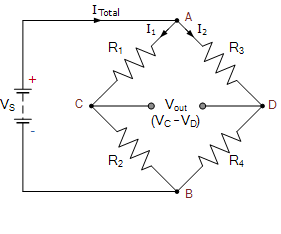

The Wheatstone Bridge is the name given to a combination of four resistances connected to give a null center value.
Wheatstone Bridge was originally developed by Charles Wheatstone to measure unknown resistance values and as a means of calibrating measuring instruments, voltmeters, ammeters, etc, by the use of a long resistive slide wire.
The Wheatstone Bridge circuit is nothing more than two simple series-parallel arrangements of resistances connected between a voltage supply terminal and ground producing zero voltage difference between the two parallel branches when balanced.
For the circuit configuration shown in the figure at balance condition
(i.e. when VC-VD = 0), the resistances are related by the following formula-
R3/R1 = R4/R2
